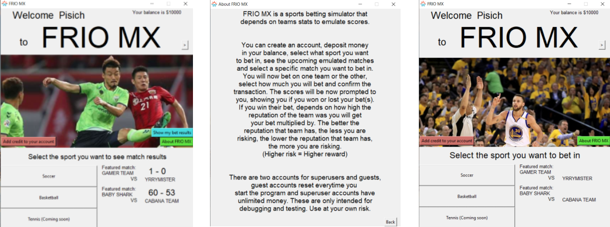

PisichHorseRacing
A horse race betting simulator where the user can choose to bet a certain amount for their favorite horse. The user can also choose the difficulty of the track (easy or hard), the harder the difficulty is, the more obstacles the track will have.- Built in C.- Built inside an Alpine image.- Memory management.- Supports multithreading.
This is a simple betting application, built to practice my contained applications skills using Docker, this project uses a Dockerfile to build the initial image that the user can use to create a new container everytime they want to. This program is contained, this means that it can be executed in any system, it could be in any server or any personal computer. Since it is inside an Alpine image, the resulting container is pretty lightweight and doesn't sacrifice any performance. Multithreading is supported in this version of PisichHorseRacing.